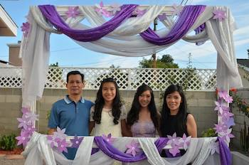

All About Colette
My Family
I have three other people in my family. My dad works at a car repair shop. My mom stays at home to watch my sister and I. My sister Janet is three years older than me and is in high school. My parents are from Vietnam, so my family is a Vietnamese American family. We try to incorporate both Vietnamese traditions and American traditions into our lifestyle.

My Skills
Some skills that I have are video creation in iMovie and music in Garageband. I also know how to use Photoshop and Illustrator, which are computer graphics. I have skills in Computer Aided Drafting in SketchUp and Floorplanner. I know how to play the piano and how to code.
- Garageband
- iMovie
- SketchUp
- Floorplanner
- Photoshop
- Illustrator
- Microsoft Excel, Word, and Powerpoint
My Hobbies and Interests
Some of my hobbies are creative writing and reading. I love to write stories on different platforms and I also like to read during my free time. I play the piano during my free time and I also like to create videos.
I am very interested in animals and the environment. I like to travel to new places and try new activites like kayaking, swimming, and hiking.
Clubs and Volunteer
I was involved in many clubs like Student Council and the Green Team in my prior years. Now I am in the California Junior Scholarship Federation or CJSF and Genius Bar. Genius Bar is a club where a group of students who are interested in technology, help the students, teachers, and staff about computers. Outside of school, I am invovled in a church dance group that gets together once a year to preform at a big ceremony. I also have volunteered at Project Shepherd at the Youth Center.
Awards and Recognition
Some awards that I received are the Principals Honor Roll and the All Es Citizenship award. I also received department awards for ATM, English, Science, and History.